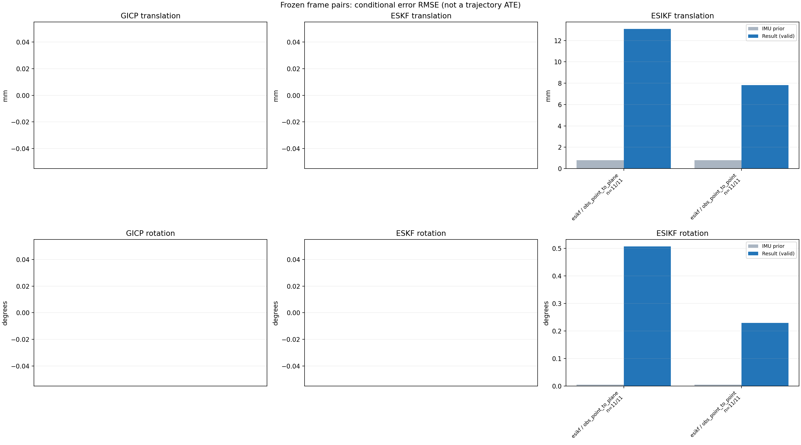

20261015_112553_up · depth=disparity_cache · cache=09b0727d403ce2fc3546
模型视差：/home/ubuntu22/slam/SIO_SLAM/models/tensorrt/disp_896x448_fp16.plan；engine SHA256=604cf6ac1f705c877260711730dd5d2d58c2a21f3020c03c668401ef7fb1e768。输入为生产裁剪与光照处理后的 RGB 0..255；此实验使用原始浮点像素视差，不应用完整前端的邻域视差后处理。
原始 ONNX SHA256：e9f49736a65d68d06681add463866b6defdf78fdd7f4f50f6cc941b682fdc0bc。
代价体图改写验证：ONNX Runtime 固定随机特征输入，最大绝对误差 0；该项检查图改写，完整模型精度仍需由录制数据评估。
配准代码版本：744ac2d993ae629b0cc44a3b1d995e04ab4fad48；观测生成版本：744ac2d993ae629b0cc44a3b1d995e04ab4fad48。
固定图像对与纯 IMU 先验；ESKF 回放固定 GICP 观测，ESIKF 直接读取点云。真值只用于此报告。
同时查看 converged 与 solver_status：上游默认 Stereo 在 max_iter / stopped_at_minimum 时也可能置 converged=true。valid 表示输入检查通过，不表示精度提升。欧氏 GICP 未提供独立的点距 RMSE，该列显示 NaN。
误差按每对图像的锚点计算，单位 m / degrees。此处 RMSE 不是全序列 ATE；末帧受同一锚点条件约束。NIS 与条件马氏距离是诊断量，少量相关图像对不能用于宣称协方差已校准。
全部指标 CSV · R / P 矩阵 CSV · Stereo 求解逐轮 CSV · ESIKF 逐轮轨迹 CSV · 末轮 H / R / K_pose 矩阵 CSV · 配置快照 · 矢量图
unflagged 排除纯惯性先验平移误差超过 50 mm 的图像对；whitened 为误差按协方差白化后的每自由度均值，协方差与实际误差相符时约为 1。prior_whitened 用真值误差只检验先验 P；NIS 为 ESIKF 首轮 rᵀ(P+R)⁻¹r，不用真值，检验的是 P+R 的总量，单靠它分不开 P 与 R，偏差、错误对应和线性化误差也会抬高它。观测方差超过先验方差 1e+04 倍的方向视为不可观，从 NIS 及其自由度中去掉（nis_dof）。一致时 nis_per_dof 均值约 1、nis_over_chi2_median 中位数约 1；帧对少且共享序列，超出 95% 分位的比例只作参考。
| stage | method | variant | valid | total | result_translation_rmse_m | result_rotation_rmse_deg | result_translation_median_m | result_rotation_median_deg | result_translation_rmse_unflagged_m | result_rotation_rmse_unflagged_deg | improved_translation | improved_rotation | posterior_whitened_by_P_rot_mean | posterior_whitened_by_P_trans_mean | prior_whitened_by_P_rot_mean | prior_whitened_by_P_trans_mean | nis_per_dof_mean | nis_over_chi2_median_median | nis_exceeds_chi2_95_fraction |
|---|---|---|---|---|---|---|---|---|---|---|---|---|---|---|---|---|---|---|---|
| esikf | esikf | obs_point_to_plane | 11 | 11 | 0.013079 | 0.50672 | 0.014078 | 0.42324 | 0.013079 | 0.50672 | 0 | 0 | 72.111 | 35.425 | 2.1183e-07 | 5.6437e-07 | 0.0046727 | 0.001634 | 0 |
| esikf | esikf | obs_point_to_point | 11 | 11 | 0.0078309 | 0.22854 | 0.0072863 | 0.1053 | 0.0078309 | 0.22854 | 0 | 0 | 81.677 | 66.266 | 2.1183e-07 | 5.6437e-07 | 0.00032144 | 0.00019432 | 0 |

| stage | case | method | variant | status | solver_status | inliers | converged | covariance_convention | covariance_from_hessian | fitness | registration_rmse_m | prior_trans_error_m | result_trans_error_m | prior_rot_error_deg | result_rot_error_deg | prior_flagged | R_rot_trace_rad2 | R_pos_trace_m2 | nis_regularized | posterior_whitened_by_P_rot | posterior_whitened_by_P_trans | prior_whitened_by_P_rot | prior_whitened_by_P_trans | nis_per_dof | nis_dof |
|---|---|---|---|---|---|---|---|---|---|---|---|---|---|---|---|---|---|---|---|---|---|---|---|---|---|
| esikf | static_a096 | esikf | obs_point_to_point | updated | converged | 13230 | 1 | 1 | 0 | 0 | 2.7568e-05 | 0.0060206 | 0.0030642 | 0.14554 | 0 | 1.8626e-07 | 9.4037e-07 | nan | 25.391 | 42.098 | 9.5333e-08 | 2.4683e-08 | 0.00010559 | 6 | |
| esikf | static_a096 | esikf | obs_point_to_plane | updated_not_converged | max_iterations | 13640 | 0 | 1 | 0 | 0 | 2.7568e-05 | 0.0074827 | 0.0030642 | 0.61084 | 0 | 1.1126e-06 | 3.9846e-06 | nan | 133.57 | 15.106 | 9.5333e-08 | 2.4683e-08 | 0.00086987 | 6 | |
| esikf | static_a100 | esikf | obs_point_to_point | updated_not_converged | max_iterations | 13539 | 0 | 1 | 0 | 0 | 4.5953e-05 | 0.0086556 | 0.0033917 | 0.6315 | 0 | 1.71e-07 | 8.3566e-07 | nan | 556.64 | 89.888 | 1.1679e-07 | 5.8263e-08 | 0.00014913 | 6 | |
| esikf | static_a100 | esikf | obs_point_to_plane | updated | converged | 13438 | 1 | 1 | 0 | 0 | 4.5953e-05 | 0.014132 | 0.0033917 | 0.94133 | 0 | 1.14e-06 | 4.0785e-06 | nan | 188.36 | 39.592 | 1.1679e-07 | 5.8263e-08 | 0.0030075 | 6 | |
| esikf | static_a104 | esikf | obs_point_to_point | updated | converged | 12991 | 1 | 1 | 0 | 0 | 4.8369e-05 | 0.001234 | 0.0024628 | 0.045999 | 0 | 1.8944e-07 | 9.8331e-07 | nan | 2.8377 | 1.527 | 6.1574e-08 | 4.8145e-08 | 3.6703e-05 | 6 | |
| esikf | static_a104 | esikf | obs_point_to_plane | updated_not_converged | max_iterations | 13112 | 0 | 1 | 0 | 0 | 4.8369e-05 | 0.0060169 | 0.0024628 | 0.29238 | 0 | 1.1984e-06 | 4.2828e-06 | nan | 15.082 | 6.6433 | 6.1574e-08 | 4.8145e-08 | 0.00099165 | 6 | |
| esikf | static_a108 | esikf | obs_point_to_point | updated | converged | 12979 | 1 | 1 | 0 | 0 | 8.6651e-05 | 0.0017355 | 0.0010865 | 0.042684 | 0 | 1.9081e-07 | 1.005e-06 | nan | 3.6888 | 3.2232 | 1.1982e-08 | 6.8427e-08 | 3.8025e-05 | 6 | |
| esikf | static_a108 | esikf | obs_point_to_plane | updated_not_converged | max_iterations | 12968 | 0 | 1 | 0 | 0 | 8.6651e-05 | 0.0063516 | 0.0010865 | 0.066614 | 0 | 1.3224e-06 | 4.8967e-06 | nan | 2.7168 | 6.3725 | 1.1982e-08 | 6.8427e-08 | 0.00038427 | 6 | |
| esikf | static_a112 | esikf | obs_point_to_point | updated | converged | 13054 | 1 | 1 | 0 | 0 | 0.00010554 | 0.011136 | 0.00189 | 0.30474 | 0 | 1.8205e-07 | 8.7606e-07 | nan | 96.841 | 118.94 | 3.625e-08 | 4.8772e-08 | 9.2306e-05 | 6 | |
| esikf | static_a112 | esikf | obs_point_to_plane | updated_not_converged | max_iterations | 13203 | 0 | 1 | 0 | 0 | 0.00010554 | 0.021572 | 0.00189 | 0.78094 | 0 | 1.1932e-06 | 4.1785e-06 | nan | 211.61 | 100.68 | 3.625e-08 | 4.8772e-08 | 0.0014565 | 6 | |
| esikf | static_a116 | esikf | obs_point_to_point | updated | converged | 13040 | 1 | 1 | 0 | 0 | 0.00010747 | 0.0045239 | 0.0034941 | 0.089741 | 0 | 1.8545e-07 | 9.7885e-07 | nan | 26.186 | 18.911 | 1.2388e-07 | 2.6991e-08 | 0.00024308 | 6 | |
| esikf | static_a116 | esikf | obs_point_to_plane | updated | converged | 12999 | 1 | 1 | 0 | 0 | 0.00010747 | 0.0023605 | 0.0034941 | 0.073681 | 0 | 1.1783e-06 | 4.571e-06 | nan | 1.554 | 1.0605 | 1.2388e-07 | 2.6991e-08 | 0.00032615 | 6 | |
| esikf | static_a120 | esikf | obs_point_to_point | updated | converged | 13078 | 1 | 1 | 0 | 0 | 0.00011118 | 0.0090911 | 0.0047116 | 0.11466 | 0 | 1.8394e-07 | 9.1117e-07 | nan | 30.599 | 89.728 | 2.2518e-07 | 1.6526e-08 | 0.00019703 | 6 | |
| esikf | static_a120 | esikf | obs_point_to_plane | updated_not_converged | max_iterations | 13370 | 0 | 1 | 0 | 0 | 0.00011118 | 0.014078 | 0.0047116 | 0.35837 | 0 | 1.1764e-06 | 4.0717e-06 | nan | 49.915 | 44.704 | 2.2518e-07 | 1.6526e-08 | 0.0011765 | 6 | |
| esikf | static_a124 | esikf | obs_point_to_point | updated | converged | 13192 | 1 | 1 | 0 | 0 | 0.00011191 | 0.011087 | 0.0019566 | 0.1053 | 0 | 1.7987e-07 | 9.1642e-07 | nan | 48.341 | 138.46 | 3.8821e-08 | 1.0374e-08 | 0.00020738 | 6 | |
| esikf | static_a124 | esikf | obs_point_to_plane | updated | converged | 13214 | 1 | 1 | 0 | 0 | 0.00011191 | 0.0109 | 0.0019566 | 0.34556 | 0 | 1.1207e-06 | 4.0011e-06 | nan | 24.769 | 20.882 | 3.8821e-08 | 1.0374e-08 | 0.018706 | 6 | |
| esikf | static_g128 | esikf | obs_point_to_point | updated | converged | 13283 | 1 | 1 | 0 | 0 | 0.001028 | 0.0072863 | 0.0062541 | 0.063782 | 0 | 1.7879e-07 | 9.2104e-07 | nan | 50.335 | 60.378 | 3.9634e-07 | 1.2437e-06 | 0.00034912 | 6 | |
| esikf | static_g128 | esikf | obs_point_to_plane | updated | converged | 13464 | 1 | 1 | 0 | 0 | 0.001028 | 0.01471 | 0.0062541 | 0.42324 | 0 | 1.1569e-06 | 3.7555e-06 | nan | 49.611 | 38.06 | 3.9634e-07 | 1.2437e-06 | 0.0072996 | 6 | |
| esikf | static_g136 | esikf | obs_point_to_point | updated | converged | 13310 | 1 | 1 | 0 | 0 | 0.001477 | 0.011131 | 0.010885 | 0.12233 | 0 | 1.7131e-07 | 8.4399e-07 | nan | 31.144 | 135.61 | 1.1997e-06 | 2.008e-06 | 0.00017321 | 6 | |
| esikf | static_g136 | esikf | obs_point_to_plane | updated_not_converged | max_iterations | 13251 | 0 | 1 | 0 | 0 | 0.001477 | 0.017589 | 0.010885 | 0.48133 | 0 | 1.1977e-06 | 4.3555e-06 | nan | 66.75 | 64.302 | 1.1997e-06 | 2.008e-06 | 0.0067848 | 6 | |
| esikf | static_g144 | esikf | obs_point_to_point | updated | converged | 13207 | 1 | 1 | 0 | 0 | 0.0018554 | 0.0056416 | 0.0015489 | 0.080404 | 0 | 1.8236e-07 | 9.1634e-07 | nan | 26.445 | 30.167 | 2.4265e-08 | 2.6542e-06 | 0.0019443 | 6 | |
| esikf | static_g144 | esikf | obs_point_to_plane | updated_not_converged | max_iterations | 13481 | 0 | 1 | 0 | 0 | 0.0018554 | 0.015351 | 0.0015489 | 0.4487 | 0 | 1.1407e-06 | 3.7792e-06 | nan | 49.288 | 52.278 | 2.4265e-08 | 2.6542e-06 | 0.010397 | 6 |